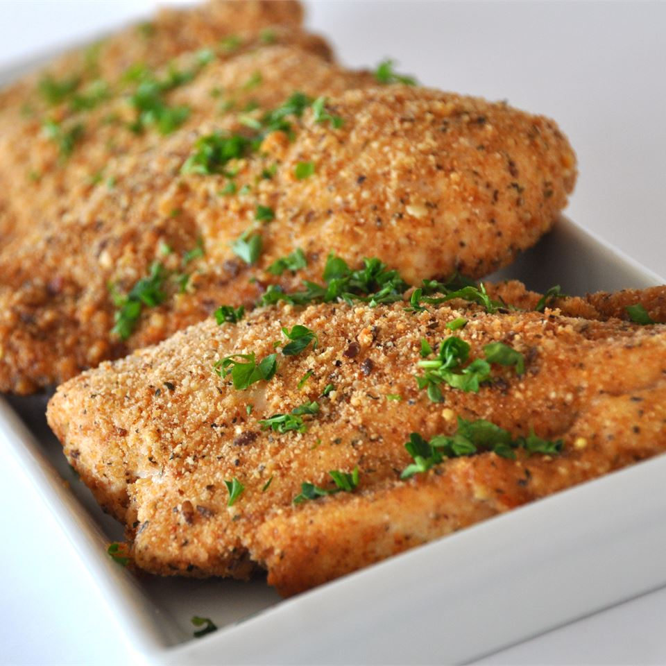

Baked Garlic Parmesan Chicken

Welcome those proteins with this wonderful Chicken recipe!.
A tasty, quick, and simple recipe for baked chicken! Create a yummy main dish with just a few handy ingredients. Serve with pasta or rice and a salad for a
great dinner.
This oven-baked breaded chicken recipe is the ideal weeknight meal as it is quick, inexpensive, and full of Italian-inspired flavor. You can make juicy,
parmesan-crusted chicken in a few easy steps. For mouthwatering success every time, include this easily adaptable recipe in your meal plans.
Ingredients for 6 servings
- 2 tablespoons olive oil
- 1 clove garlic, minced
- 1 cup dry bread crumbs
- ⅔ cup grated Parmesan cheese
- 1 teaspoon dried basil leaves
- ¼ teaspoon ground black pepper
- 6 skinless, boneless chicken breast halves
Steps
-
Preheat oven to 350 degrees F (175 degrees C). Lightly grease a 9x13 inch baking dish.
-
In a bowl, blend the olive oil and garlic. In a separate bowl, mix the bread crumbs, Parmesan cheese, basil, and pepper. Dip each chicken breast in the
oil mixture, then in the bread crumb mixture. Arrange the coated chicken breasts in the prepared baking dish, and top with any remaining bread crumb mixture.
-
Bake 30 minutes in the preheated oven, or until chicken is no longer pink and juices run clear.